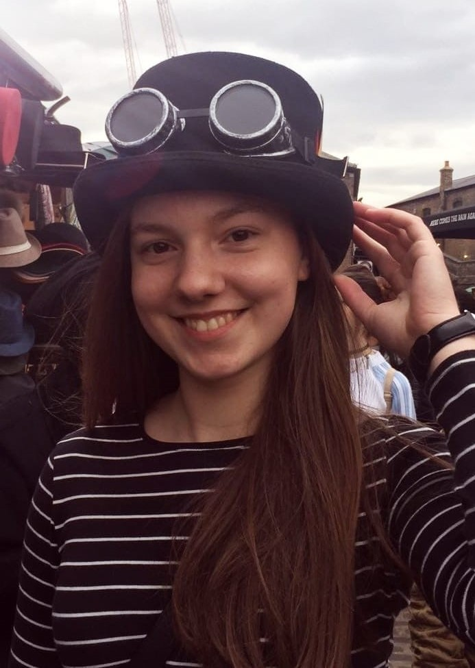

About me
Student. Confused? Bored.
Given that you've come this far, you already now a lot about me! I like travelling, sightseeing, visiting museums and eating the local cuisine; to learn and experience new things, improve on my existing skills or find something that is completely different to anything I've done before.
In my free time I like to do different kinds of sports, especially tennis, field hockey, archery, and rowing. But if the weather doesn't play along I don't mind staying indoors and working on my piano and drums skills. Because of the nationwide Covid-19 lockdowns the past year I had to spend most of my time in front of the computer, so I decided to start learning some coding. This website is the result of my dabbling in webdesign, and most of my written work at University is now done in the TeX (or rather, in its extension LaTeX) typesetting system

Background
My educational journey started in the Gymnasium (grammar school) in the countryside, where I would go until I finished the Unterstufe (graduate level). But after spending a gap year in an english 'Waldorf' school, I switched to an International Baccalaureate school in Vienna. I am very glad I made this decision because it allowed me to experience an approach to the subjects taught and relationships with the teachers that I had not come across thus far.
Following a series of summer-jobs in administrative office environments and seasonal waiting in restaurants, I was able to pursue something that I felt to actually be impactful: helping to teach students and encouraging them to fulfill their potential as an auxiliary teacher.